- Вводные упражнения к курсу.
- 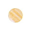 2.1. Монохромия.
- 2.2. Полярная композиция.
- 2.3. Трехцветная композиция.
- 2.4. Четырехцветие и многоцветие.
- 2.5. Полухроматическая композиция.
- 2.6. Ахроматическая композиция.
- 2.7. Многоцветие в мозаичной технике.
- 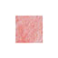 3. Реклама на плоскости (планшеты 40х40 см).
- 4. Объемно-пространственная реклама (макеты).
- 5. Световая реклама (оп-арт).
- 6. Цветовые ассоциации (вкусовые, эмоциональные).
- 7. Пространственные ассоциации (интерьеры).
- 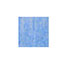 8. Оп-арт. Концептуальные задачи.
- 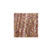 9. Форма и цвет. Формальные задачи.
- 10. Пространство, форма и цвет. Содержательные задачи.
- 11. Форма и цвет. Структуры, макеты, ассоциации.
- 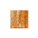 12. Пространство, форма и цвет. Макеты с колористическими задачами.
- 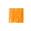 13. Интерьеры кафе.
- 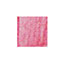 14. Вводные залы к выставкам (инсталяции).
- 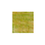 15. Выставки делового характера.
- 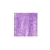 16. Декоративные композиции для интерьеров различного назначения.
- 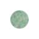 17. Производственные интерьеры.
- 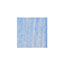 18. Сценография. Театрализованный показ мод и декорации к пьесам исторического содержания.